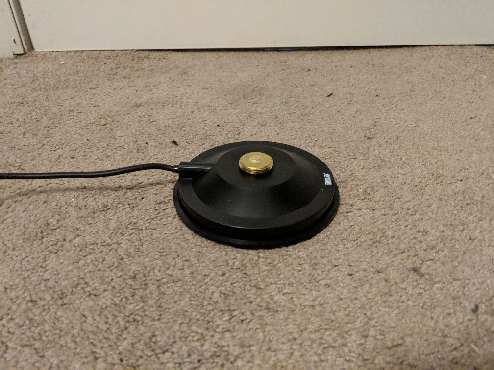
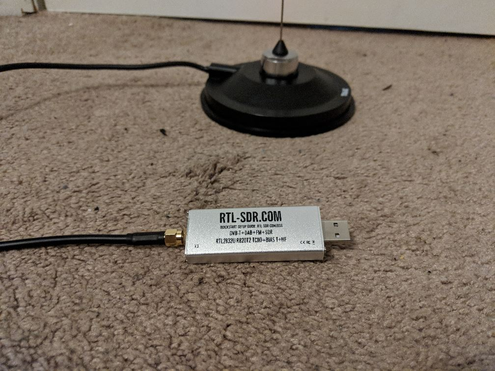
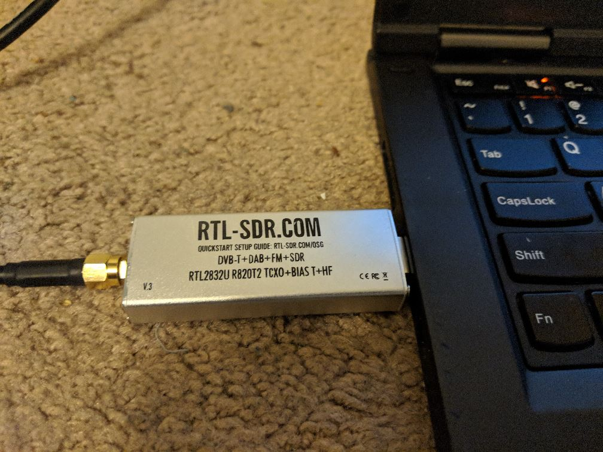

The resources pages are used as a central repository of technical research. This topic page covers material related to the design and analysis of antennas. Antennas are key components in radio based communications systems, including ground stations.
TBD - see https://opendesignengine.net/projects/mtk/wiki/Overview for an example
See Ground Sphere v3 BoM rev 2 on Google Sheets
The resources pages are used as a central repository of technical research. Business research is separated from technical research as a matter of project organization.
The following steps cover the physical setup of Ground Sphere Mk 3. You will be ready to operate Ground Sphere after completing both these steps and the Software Setup. Refer to the Operating Instructions at that point for information on capturing images from NOAA weather satellites.
None.
From the Bill of Materials
Full Hardware Assembly
The Ground Sphere projects have a rich history at Mach 30, starting with a question from Mach 30 contributor Aaron Harper leading all the way to the current generation Ground Sphere intended for receiving images from NOAA weather satellites.
The first Ground Sphere project did not go by the name Ground Sphere, it was simply referred to as GS-001. GS-001 wasn't even a formal Mach 30 project. Instead it was the physical answer to a question posed by Mach 30 volunteer Aaron Harper, "How low can we get the cost down to and reliably receive radio signals from space?"
Like all good makers, Aaron sought to answer the question quite practically, by building one with the goals of low cost and simple operations. As you will see, the success of this early work had a profound impact on Mach 30 and influenced future project development. Today we refer to GS-001 as Ground Sphere Mk 1 due to its relationship to the first project to bear the name Ground Sphere.
January 2013 - April 2013
The earliest documentation for a Ground Sphere related project dates to January 2013 when Aaron Harper started the GS-001 project. Aaron chose to have this ground station receive signals from Amateur Radio Satellites (or Ham radio satellites). As a Ham radio operator, Aaron was familiar with their operation and availability of opportunities to receive their signals. Ham radio satellites operate as Ham radio repeaters in the sky. Observers of Ham radio satellites can listen to Ham radio operators communicating with each other across vast distances.
As part of his goal to have simple operations, Aaron elected to use an omni-directional antenna. This choice meant that users would not have to track the satellite as it flies overhead, something that is required with higher gain, directional antennas. After reviewing several options, Aaron selected an egg-beater antenna design. He tied this antenna to a Software Defined Radio TV Tuner USB Dongle. These dongles are cheap and are often used by makers for similar applications.
So, how did Aaron's experiment turn out? See for yourself in the video below. By Yuri's Night of 2013 Aaron had built and tested GS-001 for under $200. Check out the blog post Ground Station part 1 for Aaron's complete story of GS-001.
May 2013 - July 2013
After the success of the first revision of Ground Sphere Mk 1, Mach 30 decided to include Ground Sphere (at this point, referred to simply as the Mach 30 ground station) in its booth at the 2013 NewSpace conference. This decision posed some challenges as the first revision was not intended for transport, let alone shipping. Its aerials were permanently mounted in place, making the shipping dimensions unmanageable and exposing the aerials to potential crushing if other packages were stacked on top of Ground Sphere's box.
Aaron made a second revision to the Mk 1 design to address these issues. Instead of directly soldering the aerials to the rest of the antenna, Aaron added screw terminals to the outside of the Ground Sphere structure. The aerials could then be packaged flat in a box and attached (or detached) with a screw driver. This design choice remains integral to Ground Sphere and has been used in all versions since the spring of 2013.
| Ground Sphere Mk1 R2 |
NewSpace 2013 was a great event for Mach 30 in general, but it was an amazing event for Ground Sphere. It turns out SkyeCube, a CubeSat Kickstarted by Southern Stars, was on exhibit two booths down from Mach 30. Like Mach 30, Southern Stars had their hardware on display in their booth. It did not take long for Mach 30's representative (J. Simmons) and Southern Stars' representative (Tim DeBenedictis) to realize Southern Stars had a satellite and Mach 30 had a ground station, and that clearly they should see if the two hardware projects could talk to each other. Within an hour Tim and J. were sending messages from the SkyCube engineering model on one end of the exhibit hall to the Mach 30 ground station at the other end. J. and Tim capped off the day by using the two projects to run an impromptu demo during a panel Tim was on later that afternoon.
| Mach 30's NewSpace 2013 Booth |
You can see more details about Ground Sphere at NewSpace 2013 on Google+ and the Mach 30 blog
Shortly after NewSpace, Mach 30 and Southern Stars began discussing how they could expand on the joint success from the impromptu demo. The conversation quickly turned to one of the backer rewards for SkyCube, a small ground station for backers to pick up "space tweets" broadcast from the CubeSat. Mach 30 and Southern Stars agreed to work together to revise the Mk 1 ground station into this backer reward. This decision would drive Mach 30 hardware development for the next twelve months and lead to the development of Ground Sphere Mk 2.
| Ground Sphere Mk 2 |
September 2013 - December 2013
Capturing signals from SkyCube and then decoding them into the "space tweets" had a significant impact on the Mach 30 ground station project, starting with earning it the name Ground Sphere (as in the on Earth companion to SkyCube.. get it? Ground Sphere - you can thank Mach 30 president J. Simmons for that bit of punnery). All jokes aside, receiving signals from SkyCube required some significant changes to the Mk 1 design. First, CubeSats have far less power than traditional satellites, making it much harder to pick up the signal. Imagine trying to hear someone whispering from across a room, it is going to be harder to hear them, and if they cannot speak up, you need to do something on your end (cup your ears, get a microphone and try to turn up the sound from it, etc). The same idea holds true with receiving satellite signals. If the satellite cannot broadcast any stronger, the ground station has to make up for the difference in signal strength. For Ground Sphere, this meant adding amplification to the communications circuit.
SkyCube also operated on a different frequency than Ham radio satellites (specifically 915 MHz vs around 430 MHz). Due to the nature of the physics for radio waves, this meant the dimensions of the Ground Sphere antenna had to be changed. Specifically, it had to be shrunk significantly. For those wondering how the SkyCube and Ground Sphere at New Space managed to work, the answer involves both a little bit of luck and the simple fact that communicating across a hundred feet while standing still is very different from communicating over hundreds of miles when one of the parties is moving at nearly 25 times the speed of sound.
All of these details, and many more, were the focus of Mach 30's project team over the fall of 2013. You can read up on all of the details of this work on the Ground Sphere Mk 2 wiki.
January 2014 - May 2014
By the beginning of 2014, the Mach 30 project team was turning its attention toward building Ground Sphere prototypes. Building the egg-beater antenna at the smaller scale required to receive signals from SkyCube proved challenging. Some of the techniques from Mk 1 did not translate well, especially where the ground plane (that mesh disk below the aerials) was concerned. Compare the images of two prototypes below. In the first prototype the ground plane is highly irregular and wavy. As the name implies, a ground plane needs to be flat. The ultimate solution came from a Mach 30 volunteer with a background in crafting. She found plastic mesh disks in sizes very close to the Ground Sphere Mk 2 ground plane, so she sandwiched conductive mesh of the ground plane between two of the plastic disks (after cutting them down to the specific size needed for Ground Sphere) giving the final design seen on the right. It was one of the most innovative design details to come out of the Mk 2 work.
| First Mk 2 Prototype | Final Mk 2 Prototype |
Not all ideas work out as well. And Mach 30 is not ashamed to admit when it makes a mistake, even when it results in a little bit of fire. We were looking for a way to physically secure the electronics inside the base of the Ground Sphere unit to protect them during transport (both shipping if needed and when users moved Ground Sphere from point A to point B). One idea we were quite fond of (at first) was to create a foam insert to hold the electronics in made from expanding insulation foam (the fire resistant kind of course). At some point during the process, one of the team members asked if the fire resistance had been tested under the circumstances we would be applying the foam to. The short answer was "not yet", and testing the foam bumped up in priority. The results were rather dramatic as can be seen in the image below. You can read the full test report in this Mach 30 blog post.
| Mk 2 Fire Test Results |
June 2014 - September 2014
When the first Mk 1 prototype was completed, testing was a simple as waiting for the next time a Ham radio satellite would be flying overhead and tuning to the correct frequency. This approach was unfortunately not an option for Mk 2. There were two key reasons why this approach would not work. First, SkyCube was not in orbit yet, and second, its mission was set for a maximum of 90 days. So, even if Mach 30 waited until SkyCube was in orbit, by the time testing would be complete the mission would be over and the backers would not be able to use Ground Sphere to receive signals from SkyCube.
Instead, Mach 30 developed a set of verification procedures including a series of tests which progressively demonstrated Ground Sphere's capabilities (from the lab to field tests). Below are some images from the testing done for Ground Sphere.
| Testing Signal Strength from 1 m |
| Testing Signal Reception from Orbit |
As it turned out, the timing of the final round of tests did overlap with the deployment of SkyCube from the International Space Station. So, our final round of testing did include attempts to receive signals from SkyCube while in orbit after all. Unfortunately, SkyCube experienced a system failure after deployment scrubbing the mission. Only a couple of telemetry "pings" from SkyCube were ever received by anyone (read the full mission debrief from Southern Stars for more details). With the target mission over, and no other open missions operating at 915 MHz, Mach 30 closed out the Mk 2 project and returned to its propulsion related projects.
Ground Sphere spent about a year sitting on the shelf, so to speak. By the fall of 2015, Ground Sphere was being discussed again as Mach 30 reviewed the market impact of its projects. By the beginning of 2016, Ground Sphere would be front and center at Mach 30, having been chosen as the 2016 project.
October 2015 - December 2015
Mach 30 has long been interested in expanding its educational programming and increasing its revenue opportunities through open source spaceflight hardware kits. Starting in October of 2015, an informal group, led by Mach 30 vice president Greg Moran, began meeting to discuss what projects had the greatest market potential for both educational work and business potential. Ground Sphere's name kept coming up at these gatherings leading to the creation of a market research prep document. Based on these meetings and this document, it became clear Ground Sphere had the greatest potential reach of Mach 30's projects. This potential would become a critical factor in the development of Mach 30's 2016 annual plan.
January 2016 - Present
Each January, Mach 30 prepares its annual plan during a day long board meeting called Perigee. At the 2016 Perigee meeting the board made two critical decisions impacting Ground Sphere. First, the purely technical team managing Ground Sphere's development would be replaced with an Integrated Product Team (IPT) made up of business, marketing, legal, and technical team members to ensure all aspects of Ground Sphere are addressed throughout the project's lifetime and in sync with each other. Second, as mentioned, Ground Sphere was selected as the focus project for 2016.
If you will recall, Ground Sphere started off as a quick physical study to answer Aaron Harper's questions about the affordability and ease of use of potential ground station hardware. Working quickly let Aaron demonstrate important results, but it left gaps in the documentation. So, the first tasks of the newly formed Ground Sphere IPT have focused on filling in some of the documentation, especially where the engineering math related to radio communications is involved. This is an area of spacecraft engineering that is not as accessible as Mach 30 would like to see it. Additionally, Mach 30 found a blog post proposing an even lower cost to entry into satellite communications than Aaron saw in the Mk 1 prototypes. Naturally, the IPT has also been investigating this claim to see what we can learn from it. Check out the video below and the rest of the project wiki for more details about the IPT's progress so far.
Welcome to Ground Sphere Mk 3. With these instructions you are well on your way to setting up your own ground station suitable for capturing the freely available weather data transmitted to Earth by NOAA's constellation of weather satellites. The instructions include 5 parts.
Don't forget to share your downloaded images online and to tag Mach 30 (Facebook | Twitter).
The resources pages are used as a central repository of technical research. This topic page covers research into Link Budgets. Link Budgets are critical tools in predicting the performance of radio based communications, including from satellites to ground stations. See the Background Material for details about how Link Budgets work.
Much of this material was reviewed with the stakeholders and the IPT at the Sprint 1 Stand Up 3 meeting
The Ground Sphere Mk 3 team has decided to build its Python Link Budget library on the calculations used in the KickSat Ground Station Link Budget. This spreadsheet includes nearly all of the required transmission effects and has been verified by comparing its results to manual calculations.
These vidoes are proof of concept video tutorials, and will be replaced with a more polished version as time permits.
A capture from NOAA 19
The equipment we used to capture the above image
Sprint Planning Document (perpetually updated)
No video this sprint, the team was too tired to get on air.
Sprint 4 Sprint Review
YouTube did not capture the Sprint 3 Review hangout
Sprint 2 Sprint Review
(Complete with impromptu orbital mechanics lessons and demonstration)
Sprint 1 Sprint Review
Run WXtoImg. Select File -> Update Keplers. This will update NOAA satellite TLEs so that your pass times are as up to date as possible.
In WXtoImg, select File -> Satellite Pass List. This window will display all future passes within a few days.
Selecting an appropriate pass can be tricky. The most important characteristic for a good pass is the maximum elevation angle. Low maximum elevation angles (less than 30 degrees) will have short passes with insufficient gain to complete an image. High maximum elevation angles (greater than 75 degrees) may have periods of insufficient gain when the satellite is directly overhead.
NOTE: Frequencies in WXtoImg are INCORRECT. Use these frequencies for NOAA satellites:
NOTE: NOAA 17 is no longer in operation. Do not try to capture an image from NOAA 17.
Ensure that the antenna is perpendicular to the ground so that it is facing directly up (zenith). This will ensure gain is uniform across the radio horizon.
In some cases, when testing the antenna, the top of a vehicle was used. While having height off of the ground may be nice to reduce interference to the horizon, the vehicle may interfere and cause stray multi-path signals to affect the quality of the signal (negatively or positively). For more predictable behavior, place the antenna in the middle of a large field on a flat surface.

Once you have selected a sufficient pass, place the antenna and connect it to your computer with the RTL-SDR Dongle. Run SDR-Sharp and WXtoImg side by side so that you can watch both as the pass occurs.
Shortly before the pass begins, select File -> Record -> Auto Record in WXtoImg. WXtoImg will now wait for a pass to reach a sufficient elevation angle before starting to record.
While you wait for the recording to start, use SDR Sharp to locate the signal. It should appear with low intensity at first and increase over time. The image below is what the signal looks like near maximum.
Adjust the gain setting to have the signal at highest power while still having the waterfall plot (on the bottom) appear with a dark blue background. We want maximum gain without saturating the receiver. The image above is a good reference.
Once WXtoImg starts recording, you should see an image start to appear! The image may start off with static, but it should get better over time. Check the Troubleshooting section below to help resolve some common issues.
You must ensure VB Cable is transmitting sound to WXtoImg from SDR Sharp. Double check SDR Sharp audio output, ensure your microphone and speakers are not muted, turn up the volume for your VBCable in Audio Settings.
There could be numerous things wrong with your setup. Ensure your ground station coordinates are correct on WXtoImg, double check that you are using the correct frequency (do NOT trust WXtoImg listed frequencies), and be sure that you are using local time and not UTC time.
TBD - see https://opendesignengine.net/projects/mtk/wiki/Overview for an example
The resources pages are used as a central repository of technical research. Topic specific pages may be included for areas of special interest.
The following is a list of other low cost satellite receiving projects. Not all projects are open source hardware, but all include at least some degree of documentation/evidence of success. Note, some of these projects require the use of a directional antenna (usually a hand held Yagi) to provide sufficient gain. Contrast this with the Ground Sphere goal of providing a new user friendly system by utilizing an omni-directional antenna.
Basic instructions for receiving 1990s era weather satellite data. Utilizes SDR USB dongle and free (mostly open source) software. Lowest cost example that does not strictly require Yagi antenna (post does not spend much time discussing the antenna). There is a PBI in Sprint 1 to attempt to reproduce the results of this post at one or more Mach 30 volunteer sites.
A much more complete example of using an SDR stick to receive images from weather satellites. It includes sections on requirements, antennas, software, and tips. Very good resource!
Hand-held Yagi + SDR based ground station for receiving telemetry from KickSat sprites. This is an open source hardware project published on GitHub.
AMSAT-UK blog post on using ham radio gear to listen to the ISS. Discussion includes antenna selection (a 1/4 wave whip antenna and a 1/4 wave ground plane). The post mentions 3 things you can listen for from the ISS.
Slashdot post covering a KickStarter to fund a BeagleBone based open source SDR receiver (complete with GPS to allow the receiver to know where it is on Earth). Could be an interesting foundation for networked Ground Spheres. The KS has already been funded and there is a good bit of press around the project. Note, the KS is charging $199 for just the Cape (aka the BeagleBone shield in Arduino speak) and $299 for a more complete package (includes BeagleBone Green but no power supply or antenna).
YouTube video/blog post about using ham radio gear to receive and decode an SSTV picture from the ISS. As with earlier posts, this operator recommends lower gain antennas for these applications (mostly for omni-directional qualities). Post includes specific antenna recommendations and includes an example pass of the ISS. Check it out:
Need to see if anyone is doing this with SDRs.
Less instructions and more background. The antenna section is particularly interesting.
Tag search for ISS posts on RTL-SDR blog. Lots of good posts linking to YouTube videos and other blog posts. This is a goldmine of info and a potential resource to share our work with. What I don't see here is someone having kit'ified the concept for easy replication by others.
There is a lot of static and then around half way through the video there are a series of very clear beeps. According to the description, the operator also decoded data on the downlink. Not a lot of detail here, but it is a nice example of what one might actually expect to experience during operations.
Long and detailed blog post showing many uses for SDR dongle, including decoding APRS packets from ISS.
Blog post covering how to use Ham Radio equipment to listen and talk to the ISS. The post has some very good details on frequencies, antennas, services, and doppler shift.
These instructions cover the software set up of the Ground Sphere Mk3.
Note, these steps are for Windows (tested on Windows 10).
Download the following files.
The purpose of these SDR tools is to allow the user to interact with his/her SDR Dongle. Without the necessary drivers and SDR Sharp, it wouldn't be possible to receive images from NOAA satellites.
WXtoImg is the software used in this project that processes the received audio signal and generates the image. WXtoImg also has a feature that receives the audio signal via audio input and plots the image in real time as it is being received. This is the significant advantage over doing the processing manually.
VBCable allows the user to pipe audio directly into WXtoImg, and plot an image in real time. This software creates a virtual audio cable that leads from SDR Sharp to WXtoImg.
Mach 30 is currently running an Open-source hardware project to develop a kit for a inexpensive and simple satellite ground receiver to listen to radio transmissions from NOAA weather satellites. We're calling it GroundSphere V3, or mark3, and right now we have a collection of possible designs from which we are about to pick one or two to build as prototypes. We're looking for help from makers to participate in our "market research" to see if these chosen designs are feasible.
Ground Stations are basically radio stations, except that they let people communicate with satellites by sending and receiving radio signals to and from Space. Sending signals requires a license, so Ground Sphere is designed to only receive signals from Space. Mach 30 is in the process of creating Ground Sphere MK3. It is an open-source ground station project, documented on our Open Design Engine. Ground Spheres ultimate goal is to allow those that use it to listen to the International Space Station as it travels above the Earth.
The various incarnations of Ground Sphere have had several capabilities, from listening to a specific satellite, to receiving Ham radio signals. Theres a wide range of frequencies that the Ground Sphere design can be tuned to, and were asking anyone interested to help us determine the best frequency to tune it to. You can tell us your thoughts in our minute long survey
MK1 was our proof of concept. Its mission was to receive signals from Ham Radio Satellites, and when it made its on-screen appearance at Yuris Night in 2013 in Colorado, it was able to receive signals from as far away as California and Tennessee.
MK2 was the companion to SkyCube , and its mission was to receive tweets from SkyCube, a Kickstarter CubeSat project from Southern Stars. Unfortunately, SkyCube had gotten essentially lost in space.
As Ground Sphere progresses, we will update our readers about how were able to grow and use the project.
Remember, you can be a part of projects like Ground Sphere by joining our weekly IPT Standup meetings, held on Google hangouts. You can join us on Tuesday evenings at 8:30pm Eastern Time by clicking here. We are always interested in meeting people who are interested in being a part of our mission to help all of Humanity reach Outer Space. To find out more about how you can become a Mach 30 Catalyst, please click here.
You can also follow GroundSphere on Twitter
The below video gives a brief outline of the Ground Sphere Project.
{kind=link}